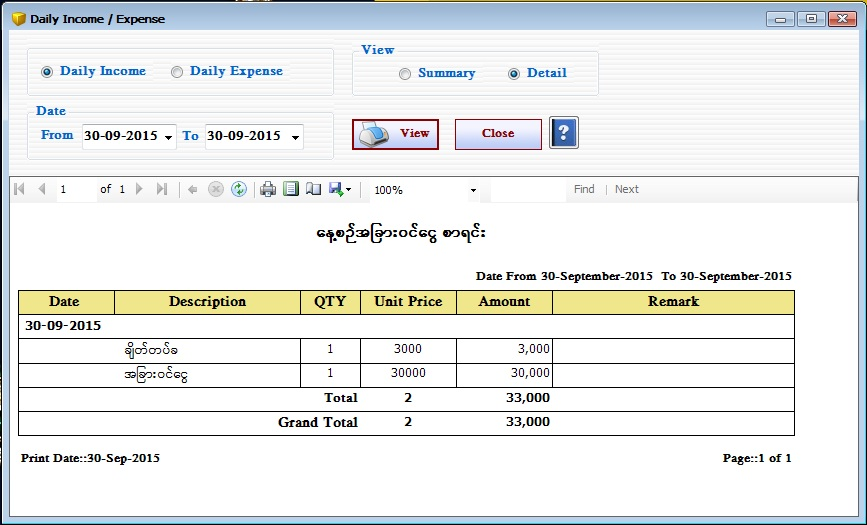
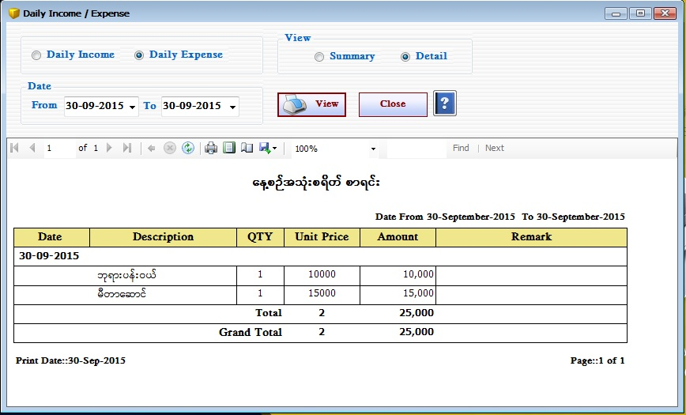

Daily Income/Expense Setup


- Reports အောက်ရှိ Daily Income/Expense Form ကိုဖွင့်ပါ။
- Daily Income/Expense သည် အခြားဝင်ငွေ နှင့် အသုံးစရိတ် စာရင်းကို ပြန်လည်ကြည့်ရှုသော Form ဖြစ်သည်။
- Summary ကို on ထားပြီး မိမိကြည့်ချင်သော From Date နှင့် To Date ကိုရွေးချယ်ပေးရပါမည်။ ထို့နောက် View Button ကိုနှိပ်၍ From Date နှင့် To Date အတွင်းရှိသော Daily Income/Expense ၏ စာရင်းချုပ်ကို ကြည့်ရှုနိုင်ပါသည်။
- အခြားဝင်ငွေ နှင့် အသုံးစရိတ် စာရင်းကို အသေးစိတ်ကြည့်ရှုလိုပါက Detail ကို on ထားပါ။ မိမိကြည့်ချင်သော From Date နှင့် To Date ကိုရွေးချယ်ပြီး View Button ကိုနှိပ်ပါက Date အလိုက် Daily Income/Expense စာရင်းအသေးစိတ်ကို ပြသပေးပါမည်။
- Daily Income/Expense Form အား အသုံးပြုပြီးပါက Close Button ကိုနှိပ်၍ ပိတ်နိုင်ပါသည်။